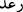
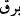

19. Yahut (onların durumu), gökten sağanak hâlinde boşanan, içinde yoğun
karanlıklar, gürültü ve yıldırımlar bulunan yağmur(a tutulmuş kimselerin durumu)
gibidir. O münâfıklar yıldırımlardan gelecek ölüm korkusuyla parmaklarını
kulaklarına tıkarlar. Halbuki Allah, kâfirleri çepeçevre kuşatmıştır.
Bu âyet-i kerîmenin başındaki “ __WORD__ ” edatı, “yahud” anlamındadır. Münâfıkların
durumunun bu veya önceki âyette anlatılan mesele, yahud da her iki âyette anlatılana
benzediğine delâlet eder. Yâni münâfıkların durumu, bu iki kıssada anlatılan hallere eşit
seviyede benzer. Dolayısıyla sen bunlardan hangisine benzetirsen, doğru yapmış
olursun. Her ikisine benzetirsen yine isâbet etmişsin, demektir.[208]
“Zulümât”; karanlıklar demektir. Bu, gecenin karanlığıyla beraber, gökyüzünü
kaplayan kat kat bulutun ve peşpeşe inen yoğun yağmurun sebeb olduğu karanlık
anlamınadır. Âyette, gece karanlığının söz konusu edildiğine dâir bir işâret yoktur. Fakat
âyetin siyâkından bunu çıkarmak mümkündür. Çünkü Allah Teâlâ bu âyetten sonraki
âyette:
“O esnâda şimşek sanki gözlerini çıkaracakmış gibi çakar karanlık üzerlerine
çökünce de oldukları yerde kalırlar.” (el-Bakara, 2/20) Şimşeğin gözü çıkaracakmış
gibi çakması, genellikle gece karanlıklarında olur. Ayrıca yürüyen kimsenin de karanlık
sebebiyle yürüyemez hâle gelişi, ancak gece karanlığı iyice bastırdığı zaman söz konusu
olur. Çünkü gece karanlığı yürüyen kimsenin önündeki şeyleri görmesini engeller.
Gündüzleri, bulutun yoğunluğu sebebiyle hâsıl olan karanlık ise asla yürüyeni yolundan
engelleyemez. İbnu’t-Temcîd’in Havâşî’sinde bu açıklama vardır.
Yağmur, karanlık mahalli sayılmıştır. Halbuki gecenin ve bulutun karanlığı yağmura
âid değildir. Fakat yağmurun şiddetini ve korkunçluğunu belirtmek için gecenin ve
bulutun karanlıkları yağmurun karanlığına tâbi kılınmıştır. Öyle ki yağmurun karanlığı
diğer karanlıkları bastırır.
“Ra’d” ( __WORD__ ); buluttan duyulan şiddetli ses, gökgürültüsü, “berk” ( __WORD__ ) ise, bulut
parçalarının birbirine çarptığı anda buluttan parıldayan ışık, şimşek anlamına gelir. Gök
gürültüsünün ve şimşeğin mekânı bulut olmakla beraber, yağmurun yağmasıyla çok
yakından ilgili bulunduğundan, yağmurun birer unsuru olarak zikredilmişlerdir.
Yaygın olan görüşe göre, gök gürültüsü, bulutların birbirine çarpmasından veya
rüzgârın tesiriyle bulutların birbirlerinden ayrılmasından meydana gelmektedir.
Tirmizî, İbn Abbas (r.a.)’dan rivâyetle Rasûlullah (s.a.)’in şöyle dediğini
nakletmektedir: “Yahûdîler Hz. Peygamber (s.a.)’e gelerek bize ra’d’in (gök gürültüsü)
ne olduğundan bahset” dediler. Rasûlullah (s.a.): “Ra’d; bir melektir. Bu melek,
bulutlarla görevlendirilmiş olup beraberinde ateşten kılıçlar vardır. Bu kılıçlarla
bulutları Allah’ın dilediği yerlere sevkeder.”[209] buyurdu. Yahûdîler, “Peki, duyulan şu
ses hakkında ne dersiniz?” diye sorunca Hz. Peygamber (s.a.): “Meleğin bulutları
istenilen yerlere sevkedip ulaştırması ânında çıkan sestir.” buyurmuştur.” Yahûdîler
de: “Doğru söyledin” diyerek Hz. Peygamber (s.a.)’i tasdik etmişlerdir.